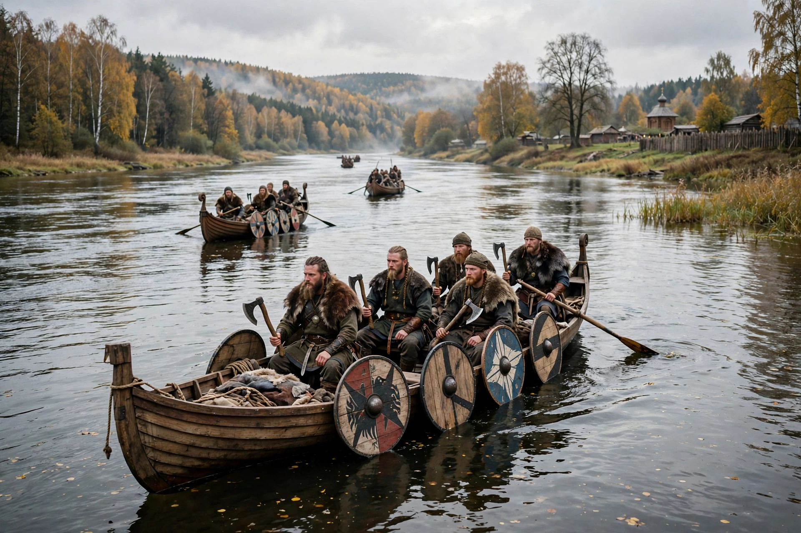

Varangians
| Varangians | |
 | |
| Origin | Scandinavia (mainly Sweden) |
|---|---|
| Active | 9th–14th centuries |
| Known for | Varangian Guard of Byzantium; founding role in Kievan Rus' |
The Varangians (Old Norse: Væringjar; Greek: Βάραγγοι) were Norse — predominantly Swedish — warriors and traders who travelled the river routes of Eastern Europe from the 9th to the 11th centuries, settling among the Slavs and playing a foundational role in Kievan Rus'. The name is generally derived from Old Norse várar, "pledges" or "oaths", denoting a sworn band.
Rus' and the river routes
Varangians controlled the trade routes from the Baltic down the Dnieper and Volga to Constantinople and the Caspian, exchanging furs, slaves, honey, and wax for silver and luxury goods. According to the Primary Chronicle, the Slavic and Finnic tribes invited the Varangian Rurik to rule them in 862, founding the Rurikid dynasty. Oleg of Novgorod seized Kiev in 882, creating the polity later called Kievan Rus'.
The Varangian Guard
From 988, when Vladimir the Great sent 6,000 Varangians to Emperor Basil II, Scandinavians formed the elite Varangian Guard of the Byzantine emperors, famed for their loyalty and their great axes. The most famous guardsman was the future Norwegian king Harald Hardrada, who served in the 1030s–1040s. Runestones across Sweden commemorate men who travelled to "Greece" — the Byzantine Empire.
Legacy
The name "Rus'" itself is thought to derive from the Finnic word for the Swedes (Ruotsi), and the extent of the Varangian role in founding the Rus' state has long been debated between "Normanist" and "anti-Normanist" scholars.
See also
Harald Hardrada · Viking activity in the British Isles · Historiography
Recreated from memory as a standalone page.